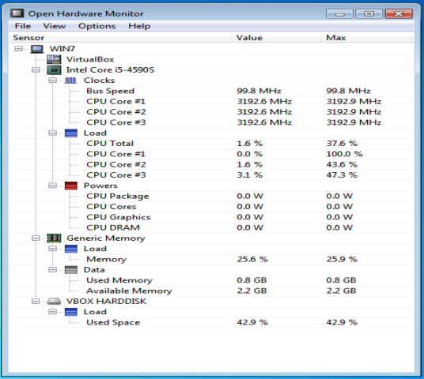
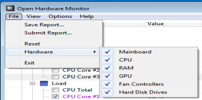
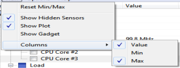
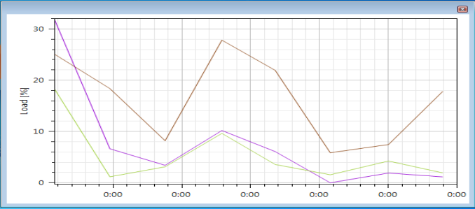
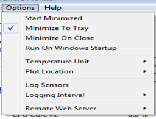

Open Hardware Monitor – бесплатное программное обеспечение с открытым исходным кодом для мониторинга температуры ядер процессора, скорости вращения вентиляторов, напряжения, нагрузки и тактовой частоты ЦП. Её разработчиком является – Michael Möller.
Утилита поддерживает большинство микросхем аппаратного мониторинга, может работать с процессорами Intel и AMD, видеокартами ATI и Nvidia, умеет отображать параметры жесткого диска SMART. Информацию можно просматривать в главном окне приложения, в настраиваемом виджете рабочего стола или в системном трее Windows. Программа не требует инсталляции.
После открытия приложения мы увидим следующее окно.

Рисунок 4.1.1 – главное окно Open Hardware Monitor.
Приложении имеет крайне простой интерфейс. Большую часть окна занимают различные показатели, например, здесь можно увидеть показатель максимальной частоты процессора и текущей рабочей, загрузки ОЗУ и жёсткого диска. Сверху также имеется панель для настройки приложения.
Во вкладке «File» мы можем сохранить отчёт о работе нашего ПК в текущий момент, скрыть информацию о какой-либо аппаратной части нашего компьютера или вовсе выйти из приложения.

Рисунок 4.1.2 – вкладка меню «File».
Во вкладке «View» имеется функционал обнуления минимальных и максимальных показателей датчиков, можно отобразить спрятанные сенсоры, можно также настроить колонки, что в них отображать. Крайне полезен функционал отображения графиков, по ним легко заметить нестабильность работы нашего ПК и, вероятнее всего, всей системы в целом.

Рисунок 4.1.3 – функционал вкладки «View».

Рисунок 4.1.4 – график работы 3 ядер CPU.
Во вкладке меню «Options» производятся пользовательские настройки необходимые пользователю данного программного обеспечения.

Рисунок 4.1.5 – вкладка меню «Options».
Также имеется вкладка «Help», которая нам показывает информацию о разработчике, а также имеет гиперссылки на его сайт и на лицензию программы.
В заключении отмечу, что функционал программы крайне высок при её относительной простоте, не надо быть гениальным пользователем компьютера, чтобы разобраться в ней. Также программа несёт достаточно полную информацию о состоянии вашего персонального компьютера.